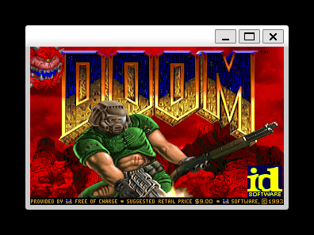
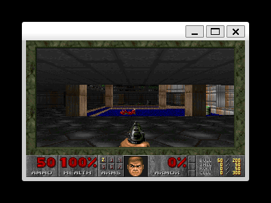
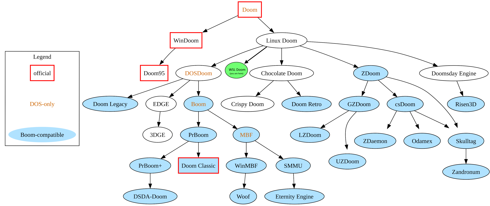

Have you ever wanted to play Doom in the Windows Subsystem for Linux? Well, now you can!


WSL Doom is a direct fork of id Software's linuxdoom-1.10 — the original Linux Doom source release. It includes 64-bit portability fixes and, critically, a TrueColor X11 port that allows the original source to be compiled and run on x86-64 Linux, including Windows Subsystem for Linux (WSL2) on Windows 11.
The port was developed as a real-world test case for JMCC — an AI-developed C compiler. If your compiler can compile Doom, that's a pretty good signal that it handles real C code.
What needed fixing?
The original source assumes two things that haven't been true for a long time:
- 32-bit pointers. The code is full of
(int)casts on pointer values and hardcoded*4pointer arithmetic. On a 64-bit system, pointers are 8 bytes — these assumptions corrupt memory and crash immediately. - 8-bit PseudoColor X11 displays. Modern X servers only support TrueColor (24/32-bit). The original rendering pipeline writes 8-bit indexed colour values directly to the X11 framebuffer, which simply doesn't work anymore.
The fix involved 10 targeted changes for 64-bit portability (pointer casts, array sizing, zone memory) and a replacement i_video_truecolor.c that converts the game's internal 8-bit palette-indexed framebuffer to 32-bit ARGB via a lookup table before blitting to X11.
Source port family tree

Doom source port family tree (modified from Wikipedia)
WSL Doom sits directly under Linux Doom in the tree — it's not a modern source port like GZDoom or Chocolate Doom. The goal was to make the original source run on modern hardware with the minimum number of changes, not to add features.
Try it
The source code, build instructions, and WSL2 setup guide are all on GitHub: github.com/jamesmiles/doom-wsl
You'll need gcc, libx11-dev, libxext-dev, an X server on Windows (like VcXsrv), and a WAD file. The shareware doom1.wad works fine.
Comments